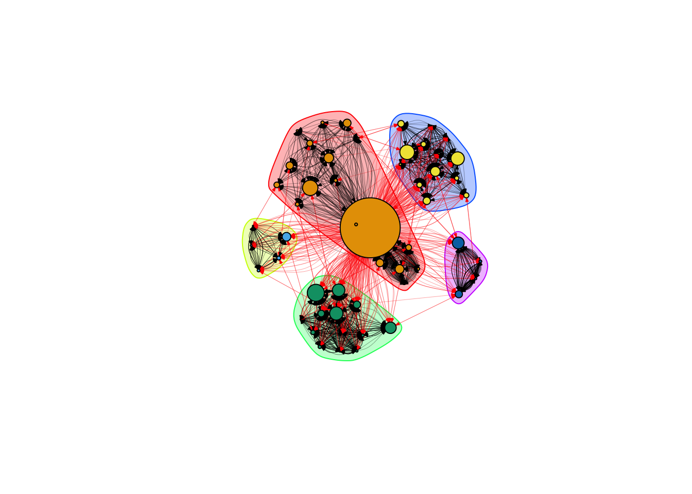
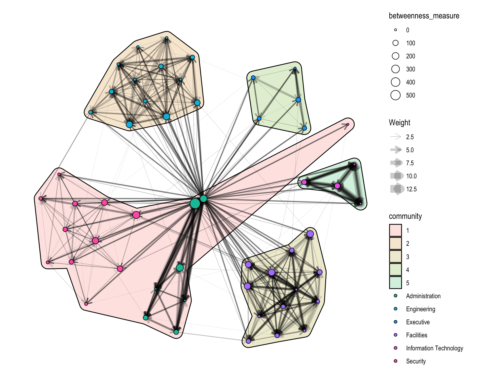
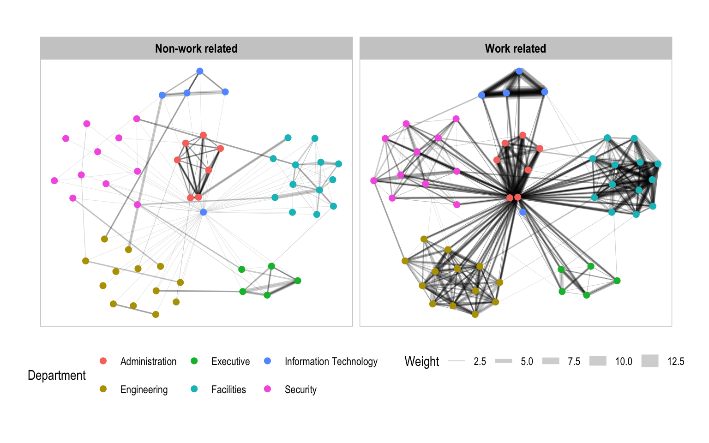
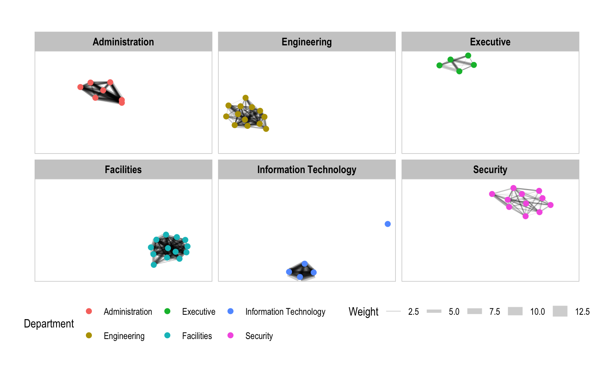

Loading packages
pacman::p_load(
ggforce,
ggraph,
igraph,
knitr,
lubridate,
tidygraph,
tidyverse,
visNetwork,
fontawesome
)Vivian Chew
March 20, 2025
March 21, 2025
| id | label | Department | Title |
|---|---|---|---|
| 1 | Mat.Bramar | Administration | Assistant to CEO |
| 2 | Anda.Ribera | Administration | Assistant to CFO |
| 3 | Rachel.Pantanal | Administration | Assistant to CIO |
| 4 | Linda.Lagos | Administration | Assistant to COO |
| 5 | Ruscella.Mies.Haber | Administration | Assistant to Engineering Group Manager |
| 6 | Carla.Forluniau | Administration | Assistant to IT Group Manager |
| 7 | Cornelia.Lais | Administration | Assistant to Security Group Manager |
| 44 | Kanon.Herrero | Security | Badging Office |
| 45 | Varja.Lagos | Security | Badging Office |
| 46 | Stenig.Fusil | Security | Building Control |
| source | target | SentDate | SentTime | Subject | MainSubject | sourceLabel | targetLabel |
|---|---|---|---|---|---|---|---|
| 43 | 41 | 6/1/2014 | 08:39:00 | GT-SeismicProcessorPro Bug Report | Work related | Sven.Flecha | Isak.Baza |
| 43 | 40 | 6/1/2014 | 08:39:00 | GT-SeismicProcessorPro Bug Report | Work related | Sven.Flecha | Lucas.Alcazar |
| 44 | 51 | 6/1/2014 | 08:58:00 | Inspection request for site | Work related | Kanon.Herrero | Felix.Resumir |
| 44 | 52 | 6/1/2014 | 08:58:00 | Inspection request for site | Work related | Kanon.Herrero | Hideki.Cocinaro |
| 44 | 53 | 6/1/2014 | 08:58:00 | Inspection request for site | Work related | Kanon.Herrero | Inga.Ferro |
| 44 | 45 | 6/1/2014 | 08:58:00 | Inspection request for site | Work related | Kanon.Herrero | Varja.Lagos |
| 44 | 44 | 6/1/2014 | 08:58:00 | Inspection request for site | Work related | Kanon.Herrero | Kanon.Herrero |
| 44 | 46 | 6/1/2014 | 08:58:00 | Inspection request for site | Work related | Kanon.Herrero | Stenig.Fusil |
| 44 | 48 | 6/1/2014 | 08:58:00 | Inspection request for site | Work related | Kanon.Herrero | Hennie.Osvaldo |
| 44 | 49 | 6/1/2014 | 08:58:00 | Inspection request for site | Work related | Kanon.Herrero | Isia.Vann |
gt_edge_agg <- gt_edge %>%
mutate(SendDate = dmy(SentDate),
Weekday = wday(SentDate,
label = TRUE,
abbr = FALSE)) %>%
group_by(sourceLabel, targetLabel, MainSubject, Weekday) %>%
summarise(Weight = n(),) %>%
filter(sourceLabel != targetLabel) %>%
filter(Weight > 1) %>%
ungroup()
glimpse(gt_edge_agg)Rows: 1,664
Columns: 5
$ sourceLabel <chr> "Ada.Campo-Corrente", "Ada.Campo-Corrente", "Ada.Campo-Cor…
$ targetLabel <chr> "Felix.Resumir", "Ingrid.Barranco", "Orhan.Strum", "Orhan.…
$ MainSubject <chr> "Non-work related", "Work related", "Non-work related", "N…
$ Weekday <ord> Saturday, Sunday, Sunday, Tuesday, Tuesday, Sunday, Tuesda…
$ Weight <int> 2, 4, 4, 3, 2, 4, 3, 2, 2, 2, 4, 3, 2, 2, 2, 3, 4, 3, 3, 2…tidygraph package. Note: The tbl_graph() class is a thin wrapper around an igraph object that provides methods for manipulating the graph using the tidy API.We will also create an igraph object directly.
IGRAPH 7f20a3d DN-- 54 1664 --
+ attr: name (v/c), Department (v/c), Title (v/c), MainSubject (e/c),
| Weekday (e/c), Weight (e/n)
+ edges from 7f20a3d (vertex names):
[1] Ada.Campo-Corrente->Felix.Resumir Ada.Campo-Corrente->Ingrid.Barranco
[3] Ada.Campo-Corrente->Orhan.Strum Ada.Campo-Corrente->Orhan.Strum
[5] Ada.Campo-Corrente->Orhan.Strum Ada.Campo-Corrente->Sten.Sanjorge.Jr
[7] Ada.Campo-Corrente->Sten.Sanjorge.Jr Ada.Campo-Corrente->Sten.Sanjorge.Jr
[9] Ada.Campo-Corrente->Sten.Sanjorge.Jr Ada.Campo-Corrente->Sten.Sanjorge.Jr
[11] Ada.Campo-Corrente->Sten.Sanjorge.Jr Ada.Campo-Corrente->Willem.Vasco-Pais
[13] Ada.Campo-Corrente->Willem.Vasco-Pais Ada.Campo-Corrente->Willem.Vasco-Pais
+ ... omitted several edgesUsing the igraph package, we can compute some measures like centrality, betweeness and closeness of the nodes in a graph.
# Degree centrality refers to how many links are attached to a node. It is particularly useful for identifying nodes that are particularly central or important to a network.
gt_graph$degree <- igraph::degree(gt_graph)
# The more often a node acts as a “bridge” between two other nodes’ geodesic (shortest) path, the higher its betweenness centrality in the network.
gt_graph$between <- igraph::betweenness(gt_graph)
# It is measured based on the average geodesic path between that node and all the other nodes. A node that is “more close” to other nodes (i.e., fewer shortest paths) is therefore considered more central.
gt_graph$closeness <- igraph::closeness(gt_graph)
vertex_data <- data.frame(
label = V(gt_graph)$label,
degree = gt_graph$degree,
between = gt_graph$between,
closeness = gt_graph$closeness
)
kable(head(vertex_data, 10))| label | degree | between | closeness |
|---|---|---|---|
| Mat.Bramar | 337 | 316.536566 | 0.0188679 |
| Anda.Ribera | 70 | 77.615690 | 0.0104167 |
| Rachel.Pantanal | 69 | 67.511765 | 0.0101010 |
| Linda.Lagos | 74 | 0.000000 | 0.0100000 |
| Ruscella.Mies.Haber | 272 | 523.717243 | 0.0188679 |
| Carla.Forluniau | 73 | 50.771035 | 0.0102041 |
| Cornelia.Lais | 80 | 0.397561 | 0.0101010 |
| Kanon.Herrero | 30 | 68.849381 | 0.0080645 |
| Varja.Lagos | 32 | 16.775581 | 0.0076336 |
| Stenig.Fusil | 37 | 53.020966 | 0.0084746 |
Using the igraph object, we can also find the neighbours of the node of interest.
+ 17/54 vertices, named, from 7f20a3d:
[1] Mat.Bramar Mat.Bramar Mat.Bramar
[4] Mat.Bramar Mat.Bramar Ruscella.Mies.Haber
[7] Ruscella.Mies.Haber Ruscella.Mies.Haber Ruscella.Mies.Haber
[10] Varja.Lagos Vira.Frente Linnea.Bergen
[13] Hennie.Osvaldo Isia.Vann Felix.Resumir
[16] Hideki.Cocinaro Orhan.Strum The plots include:
set.seed(123)
# Select different layout types
# gt_graph_kk <- layout_with_kk(gt_graph2)
# gt_graph_fr <- layout_with_fr(gt_graph2)
# gt_graph_dh <- layout_with_dh(gt_graph2)
gt_graph_nice <- layout_nicely(gt_graph2)
# Community detection
clw <- cluster_walktrap(gt_graph2)
clp <- cluster_label_prop(gt_graph2)
gt_graph2$between <- igraph::betweenness(gt_graph2)
plot(clw, gt_graph2,
layout=gt_graph_nice,
vertex.label=NA,
vertex.size=gt_graph2$between/10,
edge.width=E(gt_graph2)$Weight/11,
edge.arrow.size=E(gt_graph2)$Weight/11)
In this example we filtered out the work related emails only, which will be similar to the example in the tutorial.
g <- gt_graph %>%
activate(edges) %>%
filter(MainSubject == "Work related") %>%
activate(nodes) %>%
mutate(community = as.factor(group_optimal(weights = Weight)),
betweenness_measure = centrality_betweenness()) %>%
ggraph(layout = "fr") +
geom_mark_hull(
aes(x, y, group = community, fill = community),
alpha = 0.2,
expand = unit(0.3, "cm"), # Expand
radius = unit(0.3, "cm") # Smoothness
) +
geom_edge_link(aes(width=Weight),
arrow = arrow(length = unit(0.3, "cm")),
alpha=0.2) +
scale_edge_width(range = c(0.1, 5)) +
geom_node_point(aes(fill = Department,
size = betweenness_measure),
color = "black",
shape = 21)
g + theme_graph()
facet_edges()set_graph_style()
g <- ggraph(gt_graph,
layout = "nicely") +
geom_edge_link(aes(width = Weight),
alpha = 0.2) +
scale_edge_width(range = c(0.1, 5)) +
geom_node_point(aes(colour = Department),
size = 2)
g + facet_edges(~MainSubject) +
th_foreground(foreground = "grey80",
border = TRUE) +
theme(legend.position = 'bottom')
lol the admin dept has a lot of non work related emails..
facet_nodes()set_graph_style()
g <- gt_graph %>%
activate(edges) %>%
filter(MainSubject == "Work related") %>%
activate(nodes) %>%
ggraph(layout = "nicely") +
geom_edge_link(aes(width = Weight),
alpha = 0.2) +
scale_edge_width(range = c(0.1, 5)) +
geom_node_point(aes(colour = Department),
size = 2)
g + facet_nodes(~Department) +
th_foreground(foreground = "grey80",
border = TRUE) +
theme(legend.position = 'bottom')
gt_edge_agg2 <- gt_edge %>%
left_join(gt_node, by = c("sourceLabel" = "label")) %>%
rename(from = id) %>%
left_join(gt_node, by = c("targetLabel" = "label")) %>%
rename(to = id) %>%
filter(MainSubject == "Work related") %>%
group_by(from, to) %>%
summarise(width = n()) %>%
filter(from != to) %>%
filter(width > 1) %>%
ungroup()
gt_node2 <- gt_node %>%
rename(group = Department) %>%
mutate(shape = "dot",
title = label) # need to use addFontAwesome() to include icon
visNetwork(gt_node2, gt_edge_agg2,
main = "Network Graph",
submain = list(text = "Email Flows Among Gastech Employees")) %>%
# visNodes(icon = list(code = "f007", size = 75)) %>%
visIgraphLayout(layout = "layout_nicely") %>%
visEdges(arrows = "to", smooth = FALSE, shadow = TRUE) %>%
visOptions(highlightNearest = TRUE,
nodesIdSelection = TRUE,
selectedBy = "group") %>%
visLegend(position = "right", main = "Department") %>%
visLayout(randomSeed = 123)